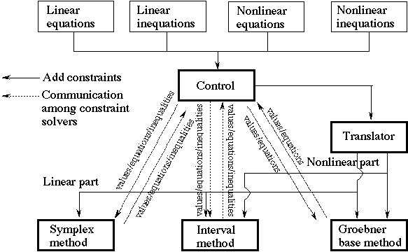

(63) Combined Constraint solver: Consort
Machine: Multi-PSI
Environment: PIMOS
Language: KL1
Source Code: 1.9 MB
Documents: Manual (Japanese)
Overview
A tool for solving constraints which are nonlinear inequalities.
Configuration

Function
Consort (Consotraint solver for non linear inequalities) was developed
to solve nonlinear inequalities by combing three primitive constraint
solvers, Interval method, Simplex method and Groebner base method.
Three primitive constraint solvers exchange new constraints which they
found each other. Consort can resolve broader nonlinear inequalities
than the simple sum of the range which three constraint solvers can
solve. But, Consort cannot perfectly solve nonlinear inequalities.
FTP
- Combined Constraint solver: Consort [375K]

www-admin@icot.or.jp